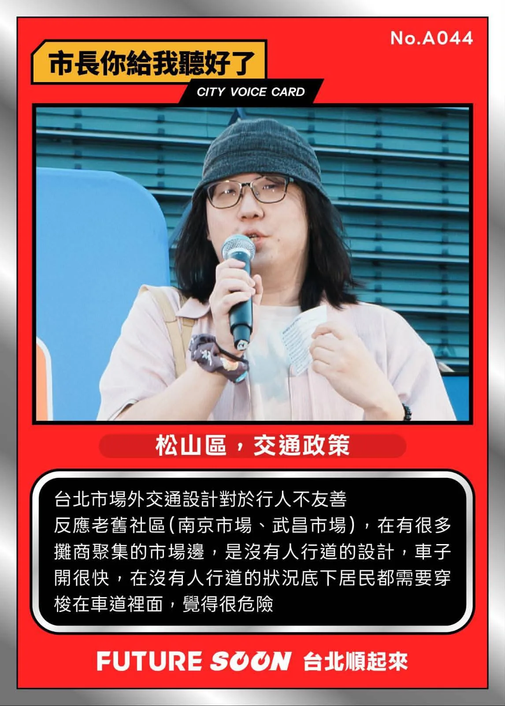
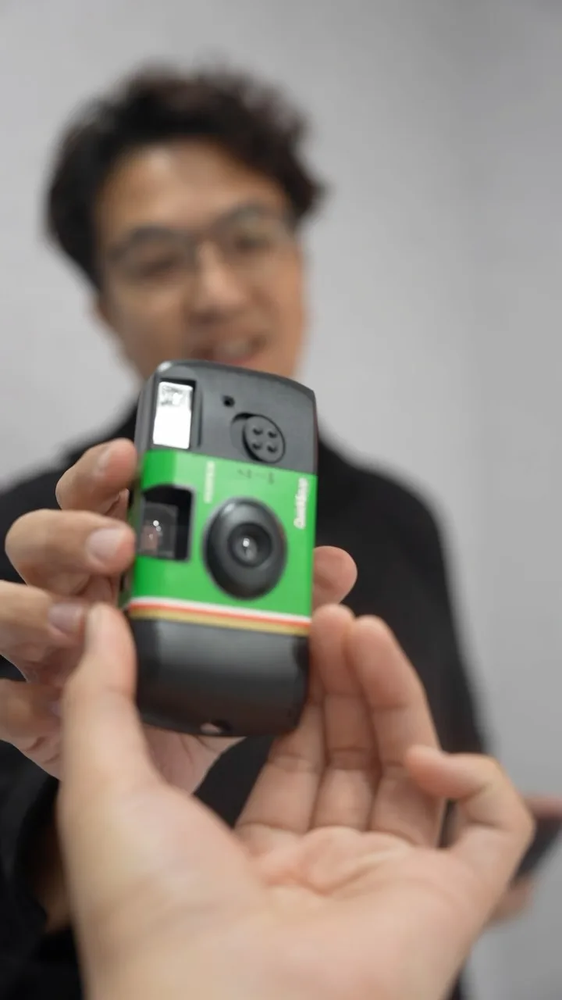
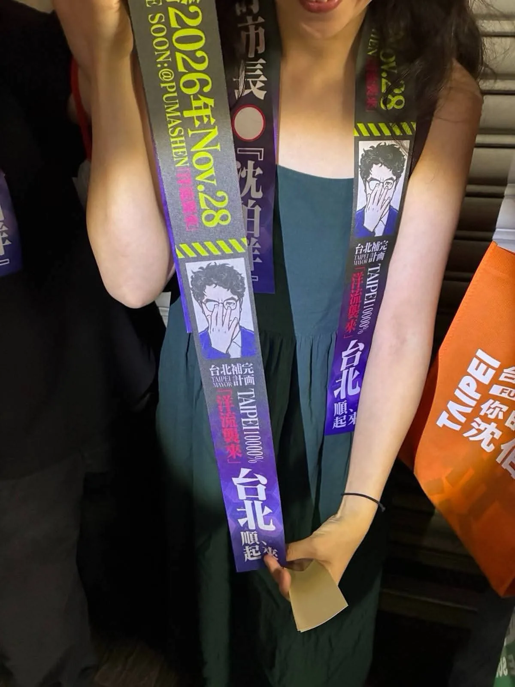
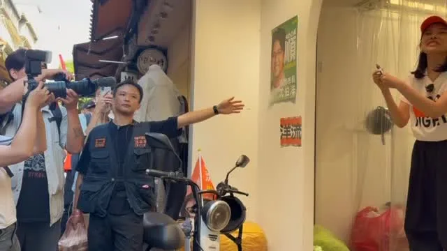
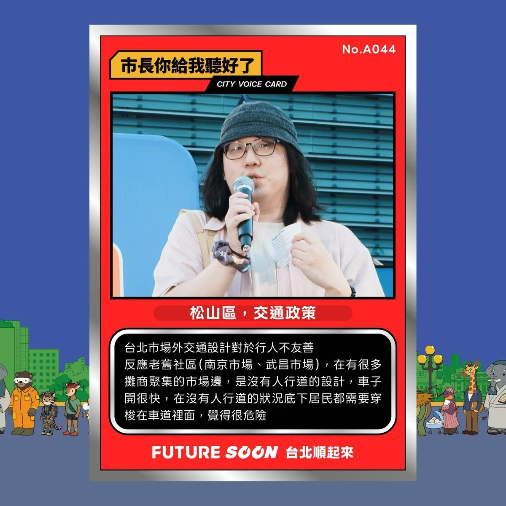

沈伯洋pumashen
@pumashen:我跟安成宰差不多厲害吧，滷肉飯的部分
Accounts
| 平台 | 帳號 | 已收錄貼文 | 最後更新 |
|---|---|---|---|
| 官網 | https://puma.taipei/ | 55 | 2026-09-22 00:00 |
| https://www.facebook.com/puma.taipei/ | 132 | 2026-09-23 16:00 | |
| https://www.facebook.com/pumashen/ | 64 | 2026-09-11 19:15 | |
| https://www.instagram.com/pumashen/ | 120 | 2026-09-23 16:01 | |
| Threads | https://www.threads.com/@pumashen | 166 | 2026-09-24 21:07 |
| YouTube | https://www.youtube.com/@PumaShen | 110 | 2026-09-22 16:28 |
| X | https://x.com/pumashen | 1 | 2026-09-09 12:49 |
| LINE 官方帳號 | https://join.puma.taipei/line/UkfBBgZ2 | 0 | — |
Timeline
顯示 648 / 648 則
@pumashen:我跟安成宰差不多厲害吧，滷肉飯的部分
實體の「市長，你給我聽好了！」第二場來了！ ⠀ ‼️西門町出沒確認‼️ ⠀ 限定快閃，你敢出題，我就接招！ ⠀ 無論你支持什麼政黨，我都想聽你對台北的想法。 到現場寫下你的主張，就有機會站上發言台，直接和沈伯洋對話。 ⠀ 地點｜捷運西門站6號出口 日期｜2026年9月23日（今天） ⠀ 17:00 開放填寫提案單 18:15 快閃發言台正式開張
🔜沈伯洋⠀競選總部成立大會 ⠀ ＼請把這天留給伯洋！！／ ⠀ 時間： 10月4日（日）14:00–17:00 （13:00開放進場） 地點： 北平東路（入口位於林森北路、北平東路交叉口） ⠀ ➣更多卡司、活動詳情，請持續關注沈伯洋社群！
@pumashen:今天要到從小長大的地方啦～ ⠀ 9/23 (三) 14:00 📍五分埔商圈（集合點：松山進安宮）

@pumashen:黨派立場可以不同，但讓台北變得更好， 是台北人共同的心願。 ⠀ 在南港的實體「市長，你給我聽好了！」活動，我們收到好多市民的提問與建議。 現場來不及回答的問題，我會和團隊一題題整理、認真討論，作為後續研擬政策的依據。 ⠀ 無論你支持什麼政黨，或對我有不同的評價，我都想聽你對台北的想法。 ⠀ 你出題，我會認真聽、好好回答，一起討論讓台北更好。 ⠀ 下一站在哪裡？ 敬請期待 ⠀⠀ #市長你給我聽好了 #台北順起來 #你的市長沈伯洋

We may belong to different parties, but our hopes for Taipei are worth discussing in person. Than...
@pumashen:▓

0922受訪 #受訪 #王偉忠專訪沈伯洋 #市政討論 #兒童保護議題 #樹的議題 #民調公正性 #國防採購特別條例

日本行出發前，助理交給我一個任務⋯
@pumashen:高雄的熱情感受到了！ 改天再跟@zenolai 隆捲風約。 高雄，我們下次見！ #台北順起來 #你的市長沈伯洋
@pumashen:明天上午一起迎接中秋。 ⠀ 9/25（五） ⠀ 8:40 海光宮中秋搏餅 📍葫蘆堵海光宮
@pumashen:實體の「市長，你給我聽好了！」第二場來了！ ⠀ ‼️西門町出沒確認‼️ ⠀ 限定快閃，你敢出題，我就接招！ ⠀ 無論你支持什麼政黨，我都想聽你對台北的想法。 到現場寫下你的主張，就有機會站上發言台，直接和沈伯洋對話。 ⠀ 地點｜捷運西門站6號出口 日期｜2026年9月23日（今天） ⠀ 17:00 開放填寫提案單 18:15 快閃發言台正式開張

台灣的故事，要讓台灣的創作者說得出來，也能靠創作生活下去。 ⠀ 和影視音的朋友交流座談，聽到許多共同的難題：作品完成了，缺少被看見的通路；幕後工作需要設備，卻負擔不起空間；想辦一場演出，得自己奔走好幾個局處。 ⠀ 台北聚集了許多創作者、製作團隊和公協會。市府可以做的事很具體：盤點市有空間，降低小型工作室負擔；從市有場館試辦紀錄片常態放映，讓本土作品走進校園與公共場域；強化影委會的產業窗口，協助跨局處協調與國際合作；也讓歌手、樂手有更多一起演出、穩定工作的機會。 ⠀ 謝謝馮賢賢主持人、周美玲、葉天倫、楊力州、張辰漁，以及柯智豪、朱約信、周震、蕭達謙，從電影、紀錄片、音樂、幕後製作到現場展演，分享第一線的經驗與建議。 ⠀ 我會認真整理大家的意見，思考台北市府如何從空間、通路、行政協調和人才支持著手，讓台北成為創作者留得下來、活得下去、走得出去的城市。 ⠀ #台北順起來 #你的市長沈伯洋

@pumashen:行程發得比較晚 結果還是有好多人來 還有「補完計畫」飄帶 真的有被你們嚇到 也很感動 謝謝大家 希望你們都有好好吃晚餐
今晚快閃延三夜市，歡迎附近的朋友來打聲招呼！ ⠀ 夜市處於交通要道，周邊道路也較擁擠，請大家留意車輛與行人，並且注意安全！ ⠀ 9/22（二） 19:30 📍延三觀光夜市
黨派可以不同，對台北的期待，值得當面聊聊。 ⠀ 謝謝每一位願意說出想法的市民。 ⠀ 我們下一場見！
0922受訪-2 #受訪 #影視座談會 #問A答A #民調 #城市願景 #學霸中二阿宅 #鄭朝方 #城市好設計帶來好效應 #「開罰不是保護，制度才要補洞」 #蘇巧慧 #雙北市長選舉 #回歸專業
Before leaving for my Japan trip, my assistant gave me a mission...
I was deeply impressed by the town hall meeting hosted by Ma Yu-wen. Thank you all for your suppo...
高雄的熱情感受到了！ 改天再跟隆捲風約。 高雄，我們下次見！ #台北順起來 #你的市長沈伯洋

@pumashen:回到從小長大的五分埔掃街 路上遇到的商家都好熱情 還意外完成「沈家族大合照」😂 途中看到兩位長輩不慎跌倒 我趕快上前關心 還好都沒有大礙 後續也請志工陪同觀察 請助理留下名片 有需要都可以隨時聯絡我們 謝謝大家的支持 請大家回家注意安全 平安最重要 選舉很重要，安全更重要 大家都要平平安安回家！
實體の「市長，你給我聽好了！」第二場來了！ ⠀ ‼️西門町出沒確認‼️ ⠀ 限定快閃，你敢出題，我就接招！ ⠀ 無論你支持什麼政黨，我都想聽你對台北的想法。 到現場寫下你的主張，就有機會站上發言台，直接和沈伯洋對話。 ⠀ 地點｜捷運西門站6號出口 日期｜2026年9月23日（今天） ⠀ 17:00 開放填寫提案單 18:15 快閃發言台正式開張
今天要到從小長大的地方啦～ ⠀ 9/23 (三) 14:00 📍五分埔商圈（集合點：松山進安宮）

黨派立場可以不同，但讓台北變得更好，是台北人共同的心願。 ⠀ 在南港的實體「市長，你給我聽好了！」活動，我們收到好多市民的提問與建議。現場來不及回答的問題，我會和團隊一題題整理、認真討論，作為後續研擬政策的依據。 ⠀ 無論你支持什麼政黨，或對我有不同的評價，我都想聽你對台北的想法。 ⠀ 你出題，我會認真聽、好好回答，一起討論讓台北更好。 ⠀ 下一站在哪裡？ 敬請期待 ⠀⠀⠀ #市長你給我聽好了 #台北順起來 #你的市長沈伯洋
@pumashen:今晚快閃延三夜市，歡迎附近的朋友來打聲招呼！ ⠀ 夜市處於交通要道，周邊道路也較擁擠，請大家留意車輛與行人，並且注意安全！ ⠀ 9/22（二） 19:30 📍延三觀光夜市
@pumashen:黨派可以不同，對台北的期待，值得當面聊聊。 ⠀ 謝謝每一位願意說出想法的市民。 ⠀ 我們下一場見！
0922受訪-1 #受訪 #延三觀光夜市 #夜市帶貨王 #922國際無車日
@pumashen:日本行出發前，助理交給我一個任務⋯
The water party was a huge success thanks to everyone's enthusiasm! Thank you, Councilor Lin Yen-...
I felt the warmth of Kaohsiung! I'll hang out with Long Tornado again another day. Kaohsiung, see...